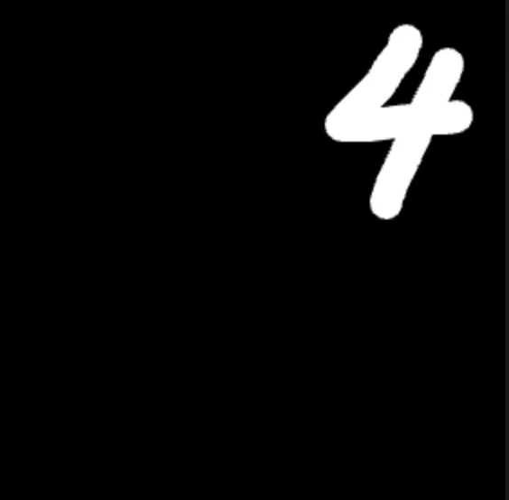
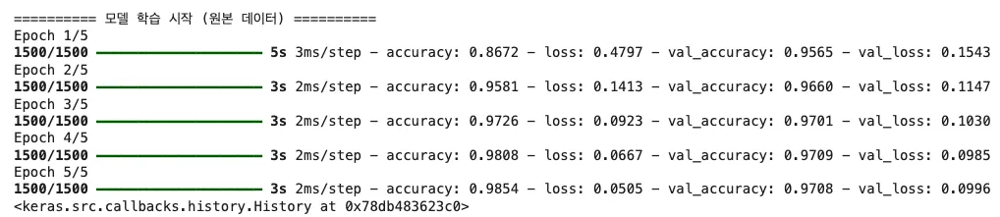
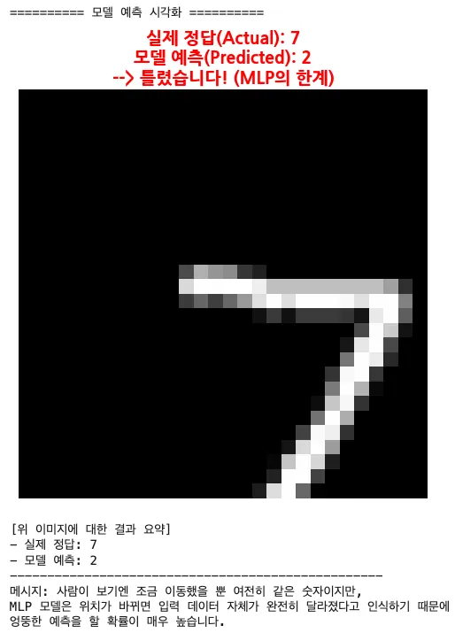

숫자 7을 5픽셀 옮겼을 때 MLP 입력에서 가장 크게 달라지는 것은?
답을 고르면 바로 해설이 나타납니다.
Part 1 · MLP Limits
같은 숫자라도 자리를 조금 옮기면 MLP에게는 완전히 다른 입력이 됩니다. 위치를 외운 모델이 왜 흔들리는지 실제 예측 결과로 확인합니다.
Failure Cases · S54–55
숫자 4가 중앙을 벗어나 화면의 모서리와 가장자리로 이동하자, 원본 모델은 각각 3·5·7·2로 예측했습니다.

Why
Flatten 뒤의 각 입력 뉴런은 특정 위치의 픽셀과 연결됩니다. 같은 획이 다른 좌표로 옮겨지면, 사람에게는 같은 숫자여도 MLP가 받는 784개 값의 배치는 크게 달라집니다.
Shift Test · S56
실제 정답 7인 테스트 이미지를 오른쪽과 아래로 각각 5픽셀 옮겼습니다. 획의 모양과 정답은 그대로지만 화면 안의 위치만 달라졌습니다.

Training Output · S56
원본 자료의 모델은 5 epoch만 학습했습니다. 마지막 epoch의 학습 정확도는 98.54%, 검증 정확도는 97.08%였지만 위치 이동 문제는 남았습니다.

Prediction · S57
사람에게는 조금 이동한 같은 숫자지만, MLP는 입력 데이터 자체가 완전히 달라졌다고 인식해 엉뚱한 예측을 할 확률이 높습니다.

Interactive · Widget ⑦
Quick Check
답을 고르면 바로 해설이 나타납니다.
답을 고르면 바로 해설이 나타납니다.